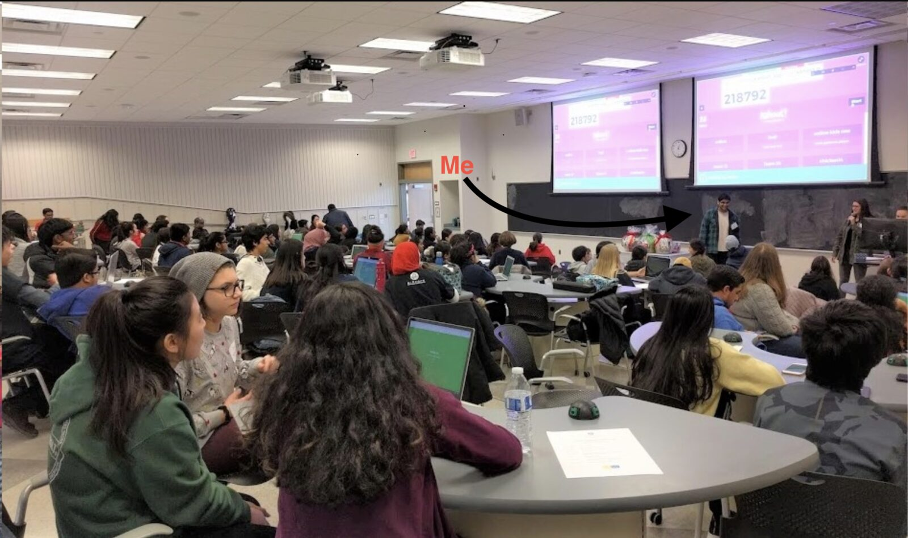
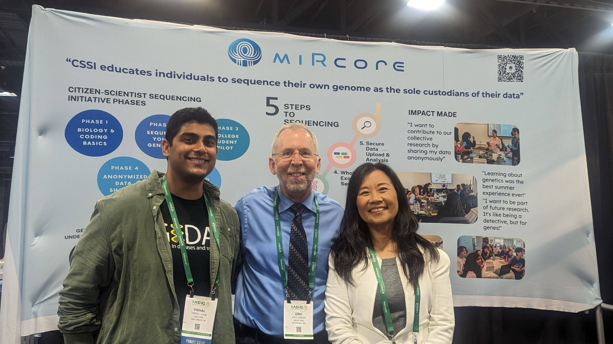
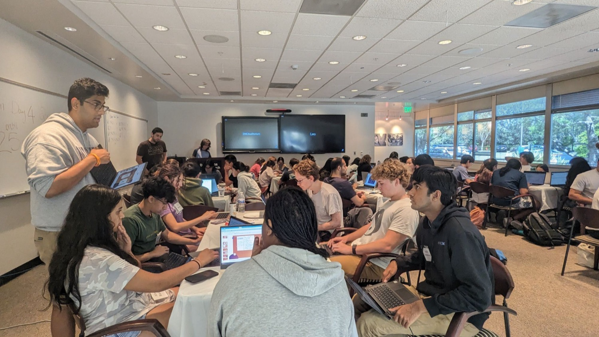
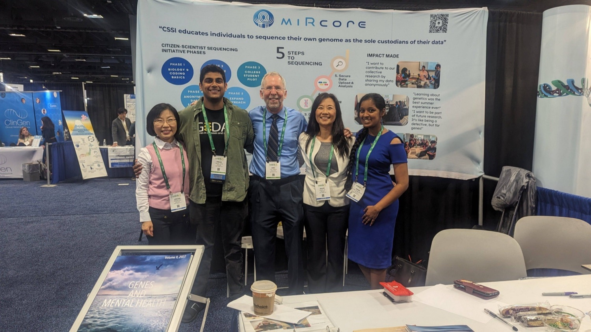
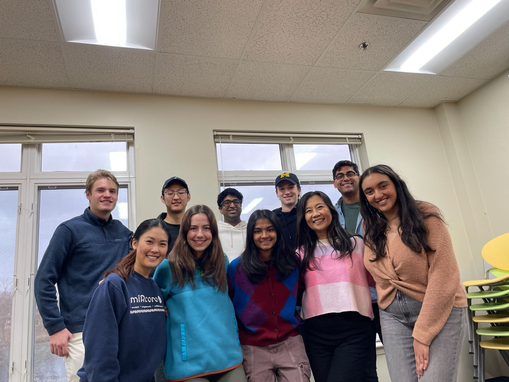

miRcore
Project Lead (2023 – 2024) · Research & Teaching Assistant (2015 – 2021)
What is miRcore
miRcore is a nonprofit organization devoted to the democratization of medical research. Their core mission is to promote health literacy, ensuring everyone has access to the knowledge and resources they need.
They are particularly dedicated to the education of high school students, imparting vital skills in biology, bioinformatics, and coding. This robust educational foundation empowers students to delve deeper into the world of medical research, arming the next generation with the tools they need to make significant breakthroughs in the field.
One of miRcore's standout initiatives is their summer camp program. These camps offer intensive, hands-on training, allowing students to immerse themselves in practical and theoretical knowledge. Beyond this, miRcore also provides annual memberships, ensuring continuous learning and growth for its members.
From 2023 to 2024, I worked full-time as a Project Lead at miRcore, helping make STEM education available to students regardless of where they live. The role resonated with me because it addressed education disparity directly. I worked on IRB protocols, wrote grants, and expanded outreach, and I led the Citizen Scientist Sequencing Initiative, which gives students the chance to sequence their own genome and be the sole owner of their private data.
Video about miRcore
Some Pictures from miRcore





Drag to spin · click a photo to enlarge